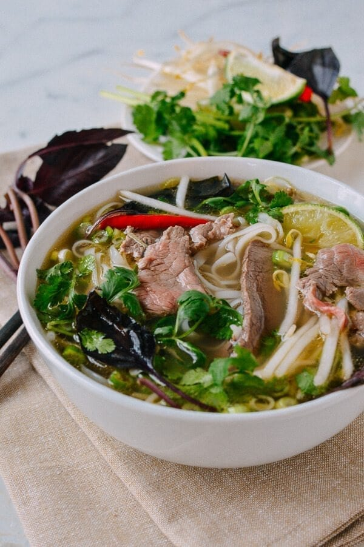

Pho

Description
Pho is a Vietnamese soup dish consisting of broth, rice noodles,
herbs, and meat (usually beef, sometimes chicken). Pho is a popular
food in Vietnam where it is served in households, street stalls and
restaurants countrywide. Residents of the city of Nam Dinh were the
first to create Vietnamese traditional pho. Pho is considered
Vietnam's national dish.
Ingredients
- 2 3-inch (7 to 8 cm) pieces ginger, cut in half lengthwise (no need to peel)
- 2 onions (peeled)
- 5 pounds beef marrow or knuckle bones
- 2 pounds beef chuck (cut into 2 pieces)
- 5 quarts water
- 2 scallions (cut into 4-inch lengths)
- 1/3 cup fish sauce
- 2 ½ ounces rock sugar (2 1/2 tablespoons granulated sugar)
- 8 star anise
- 6 cloves
- 1 cinnamon stick
- 1 black cardamom pod (optional)
- 2 teaspoons fennel seeds
- 2 teaspoons coriander seeds
- 1 tablespoon salt
- 1 pound dried pho noodles
- 1/3 pound beef sirloin (slightly frozen, then sliced paper-thin against the grain)
- Garnishes
- Sliced chili
- Thinly sliced onion
- Chopped scallions
- Cilantro
- Mung bean sprouts
- Thai basil
- Lime wedges